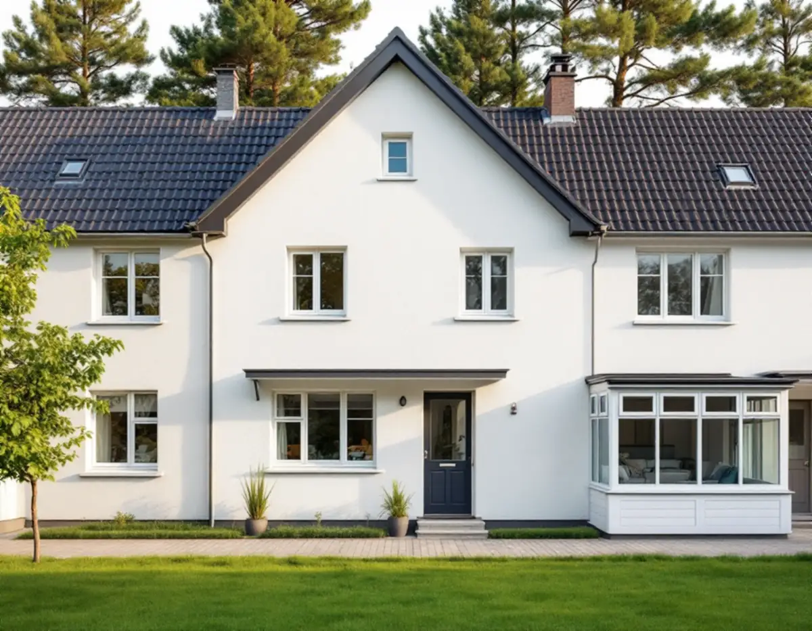
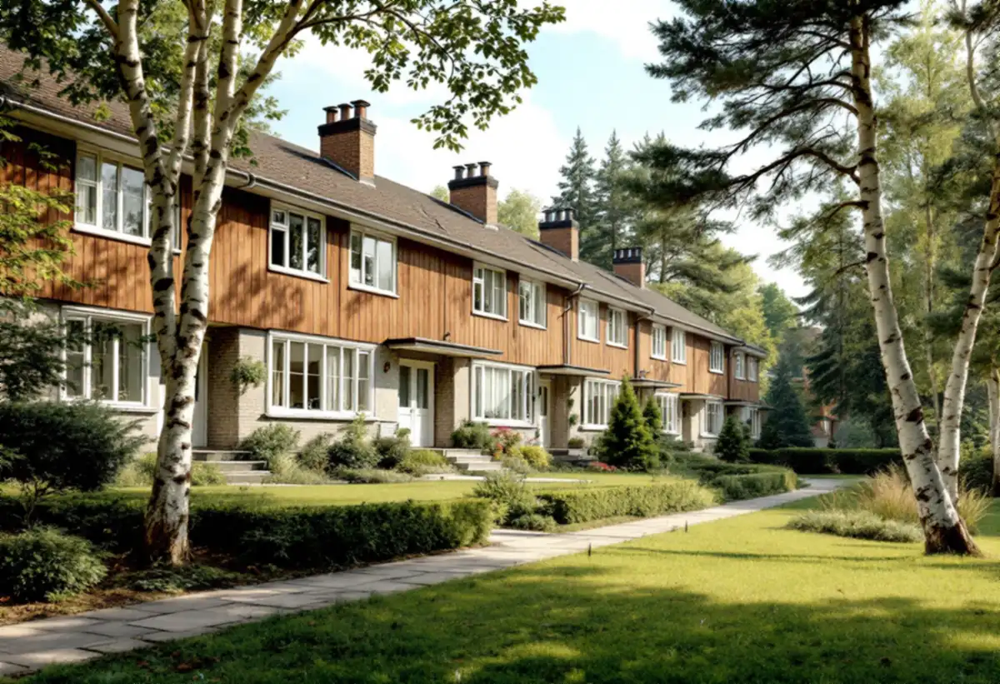
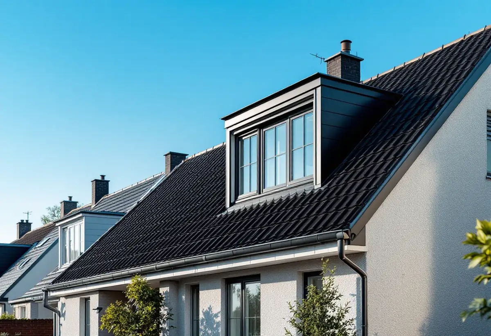

Platsbesök
Gratis besök där vi mäter huset och nivåerna mot trädgården.
I Vällingby och Råcksta ligger radhus och kedjehus från 1950-talet i enhetliga grupper, och stora delar av stadsdelen ingår i riksintresset Vällingby–Råcksta. Ett uterum eller en större takkupa är fullt möjligt, men kräver ofta bygglov. Geal Entreprenad AB ritar tillbyggnaden efter husgruppen och sköter ansökan och bygget.

Stadens beskrivning av riksintressena berättar att Vällingby–Råcksta planerades som landets första ABC-stad, med högre hus närmast centrum och en successiv nedtrappning av skalan, och längst ut områden med radhus och småhus. Bland karaktärsdragen nämns bebyggelsens anpassning till naturen och terrängen och de ursprungliga husens gestaltning och detaljer.
Stockholms stad skriver att bygglov krävs för åtgärder inom ett riksintresse för kulturmiljövården, som visas med en blå ring i Stadsmuseets karta – även för sådant som annars är lovfritt. En tillbyggnad på ett radhus inom riksintresset prövas därför av byggnadsnämnden.

Stockholms stad beskriver en tillbyggnad som något som byggs direkt mot huset och ökar dess volym. Som exempel nämns uterum, skärmtak, större takkupor och lågt sittande balkonger. Utanför riksintresset kan en sådan tillbyggnad vara lovfri upp till 30,0 kvadratmeter sammanlagt, men i Vällingby–Råcksta behövs lov.
Stadens vägledning för tunnelbanestäderna beskriver radhusområdena som enhetligt utformade husgrupper, och flera av dem har höga kulturmiljö- och stadsbildsmässiga värden. Ett uterum som ska godkännas ritas därför med samma takvinkel, material och kulörer som huset, och helst likadant som grannarnas om flera i raden har byggt.
Vägledningen beskriver hur bryn och platåer utanför centrum användes till radhus, med mjuk anpassning till terrängen och nivåskillnader som tas upp med en suterrängvåning. Det påverkar tillbyggnaden: mot trädgården kan marken ligga en våning lägre än mot gatan.
Ett uterum på suterrängsidan kan behöva stå på pelare eller en egen grund, och ansluta mot husets bjälklag. Vi tar fram konstruktionsunderlag för grunden och anslutningen, och om bärande delar påverkas väsentligt krävs anmälan och startbesked utöver lovet.
Enligt stadens områdesfakta för 2025 var 228 av de 449 småhusen i Vällingby bostadsrätter, och i Råcksta 91 av 390. I ett radhus med bostadsrätt är det föreningen som äger huset, och en tillbyggnad kräver föreningens tillstånd innan något annat. Staden påminner om att du som bor i en bostadsrätt behöver föreningens tillstånd för ändringar som påverkar bärande delar, ventilation eller vatten och avlopp.
Vi tar fram ritningar som både styrelsen och byggnadsnämnden kan ta ställning till. Vill du hellre bygga fristående på tomten beskriver vi det under attefallshus i Vällingby, och utbyggnader i allmänhet under tillbyggnad.

Gratis besök där vi mäter huset och nivåerna mot trädgården.
Tillstånd från föreningen om radhuset är en bostadsrätt.
Tillbyggnad efter husgruppens form, material och kulörer.
Ansökan till byggnadsnämnden inom riksintresset.
Grund, stomme, tak och anslutning mot huset.
Den nya delen tas i bruk efter slutbesked.
Rotavdraget gäller arbetskostnaden, inte material. Skatteverket räknar en tillbyggnad av ett bostadshus som rotarbete om någon av dess sidor sitter ihop med husets yttervägg till minst 75 procent eller om en dörr förbinder de två delarna.
Bostaden ska vara äldre än fem år och större delen av den ursprungliga stommen ska behållas. Där avdraget gäller drar Geal det direkt på fakturan.
Storlek, grundläggning på suterrängsidan, hur taket ansluts, material som ska matcha husgruppen och bygglovshandlingarna. Efter ett gratis platsbesök får du ett skriftligt kostnadsförslag.
Mer boyta i samma hus.
Tillbyggnad →Takbyte, takbesiktning och plåtarbeten.
Takläggare i Vällingby →Radhusen i riksintresset Vällingby–Råcksta.
Takrenovering i Vällingby →Riksintresset och villaområdena.
Attefallshus i Vällingby →Riksintresset, radhusen och våtzonerna.
Badrumsrenovering i Vällingby →Bygga till i riksintresset.
Byggföretag i Vällingby →Puts från 1950-talet och kulör i riksintresset.
Fasadmålning i Vällingby →Tegel, puts och skivor på tunnelbanestadens hus.
Fasadrenovering i Vällingby →Radhus och kedjehus i riksintresset.
Fönsterbyte i Vällingby →Radhusens fönster.
Fönsterrenovering i Vällingby →Gamla mattor, lim och asbest.
Golvläggare i Vällingby →Lamellgolv, svikt och slitskikt.
Golvslipning i Vällingby →Kök i lägenheter och radhus.
Köksrenovering i Vällingby →Radhus och lägenheter i ABC-staden.
Målare i Vällingby →Takplåt, rännor och beslag i riksintresset.
Plåtslagare i Vällingby →Entréer, dörrar och räcken på radhusen.
Snickare i Vällingby →Kälvesta och husgrupperna.
Takbyte i Vällingby →Väggar från 1950-talet.
Tapetsering i Vällingby →ABC-staden, eternit och föreningen.
Totalrenovering i Vällingby →